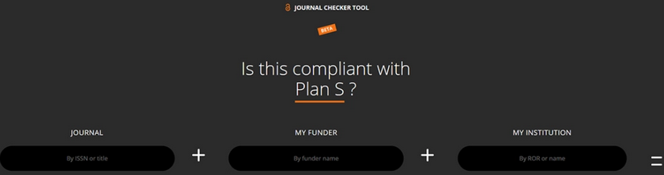

Publishing articles in 2021
This post is based on an earlier blogpost.
Plan S, an initiative for open access science publishing launched in 2018, requires researchers who are funded by signatories such as the Dutch Research Council (NWO) to publish in open repositories/journals by 2021. The European Commission is a supporter of Plan S and has similar requirements for their Horizon Europe projects.
NWO projects which are funded by calls from 1st of Jan 2021 onward and Horizon Europe projects* have the following requirements:
Articles should be Open Access upon publication: No embargo period is allowed.
- Books and book chapters are still beyond the scope of Plan S. NWO allows an embargo period of 12 months for these research outputs.
Authors should retain copyright.
Authors should use a CC-BY license in order to allow as much reuse of scholarly publications as possible.
For books and book chapters CC-BY-ND/NC is still allowed.
NWO allows exceptions for CC-BY-ND for articles.
See the Creative Commons website for more information about these licenses.
You can use project funding for Article Processing Charges but:
For NWO the journal needs to be registered in the Directory of Open Access Journals. If the journal is not registered in this directory you can still publish in the journal but you cannot use funding for the fees.
For Horizon Europe you are eligible for funding if the article is published in a full open access venue (hybrid journals are not allowed).
See also the TU Delft Open Access Fund!
The manuscript needs to be peer reviewed. Preferably the Version of Record from the publisher is made available, but the Author Accepted Manuscript (postprint that is peer reviewed but not yet formatted by the journal) is also accepted.
Compliance is monitored by NWO/Horizon Europe.
The Journal Checker Toolallows you to easily check whether your preferred journal is in compliance with Plan S!

Researchers at Dutch institutes have several options to publish Open Access for Plan S:

Thanks to deals (transformative agreements) with the bigger publishers, you do not have to pay Article Processing Fees for publishing open access with, for example, Elsevier (at a national cost of €80,5 million over 5 years). You can check whether you can publish open access at no additional costs to you using the Journal Browser.
You can find open access journals using the Directory of Open Access Journals.
You can archive a postprint using repositories/preprint servers: Check Sherpa/Romeo to see which version of the manuscript you can make available and if they allow for immediate open access (if there is an embargo period required this route is not Plan S compliant!).
Horizon Europe is developing an Open Access Platform where their projects can choose to publish in order to make articles freely available.
You can use the TU Delft Open Publishing Platform: The Evolving Scholar is now live and open for submissions!
You can use the Rights Retention strategy.
If you would like to make your work available from projects before 2021 (or if you’re not funded by NWO/Horizon Europe) you can also make use of these additional options:
Through the project ‘You Share, We Take Care’ you can make articles and book chapters published from 2018 onwards available after an embargo period of six months. You can now participate through this online form!
You can always post a postprint using repositories/preprint servers: Check Sherpa/Romeo to see which version of the manuscript you can make available and for the length of embargo periods.
Resources that go into more detail: